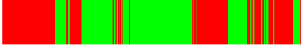
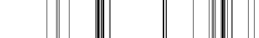
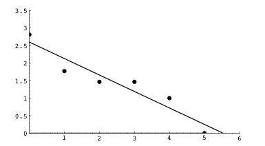

| In Scene Seven players from both periods occupy the stage, all in attire of the Regency Period. |
| As we proceed throughout the scene, draw a vertical red line for each speaker from the present, and a vertical green line for each speaker from the past. |
| This yields the top graph. Neither pattern is a fractal, because each has long contiguous sequences. |
| However, the next graph plots a line at each change of period. This exhibits some hierarchical structure, to be sure not an exact mathematical fractal, but plausibly a natural fractal. |
| Thanks to Josie Rodberg for pointing out this structure. |
|  |
|  |
| A quantitative way to support a claim of fractality is to divide the run lengths for each period into bins and test whether the number of runs in each bin scales as a power law. If the points fall approximately along a straight line in a log-log plot, the claim of fractality is supported. In this graph we use the bins |
| [1], [2,3], [4,9], [10,27], [28,81], [82,243] |
| Though the fit is not perfect, it does support the claim of fractality. |
|  |
| Why is this here? Did Stoppard design these changes of period to be a fractal? Perhaps the echo of natural fractals drove this choice. |
Return to Stoppard.